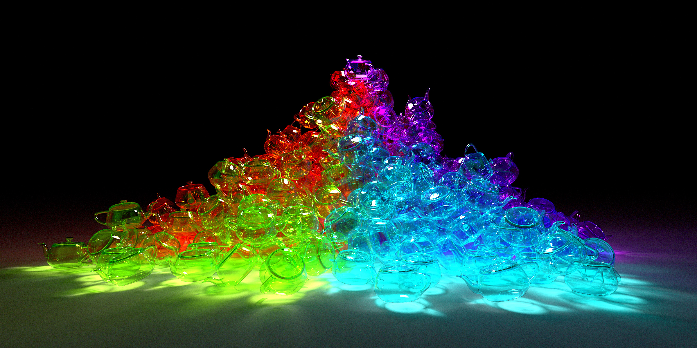
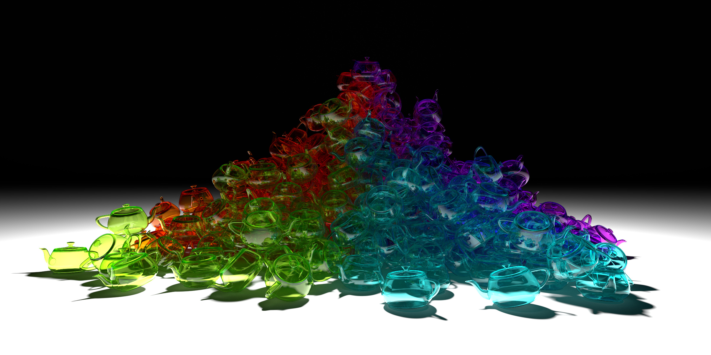
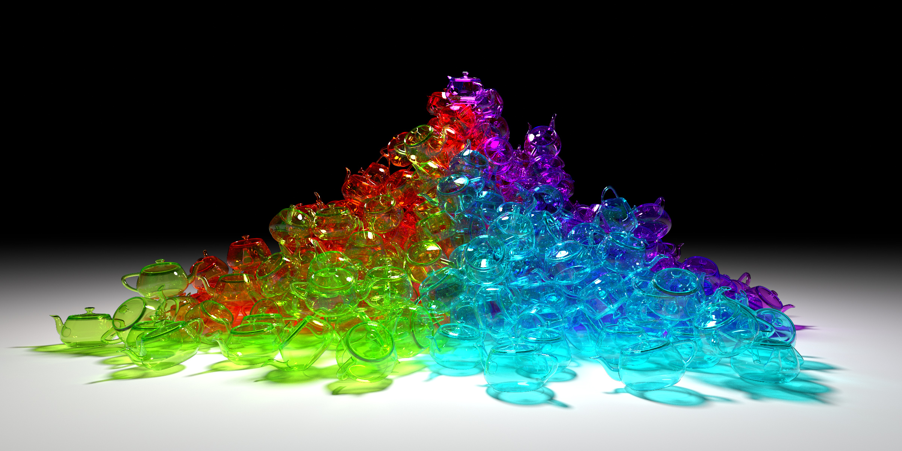
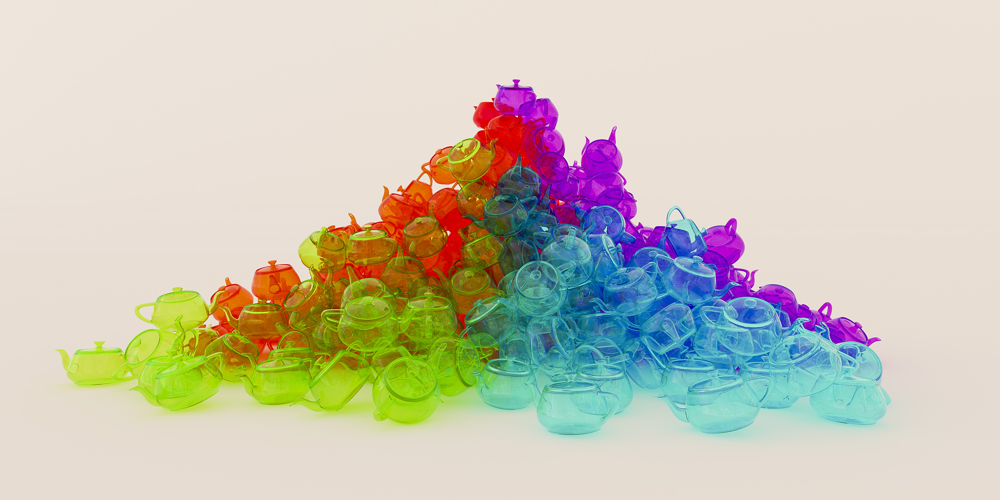
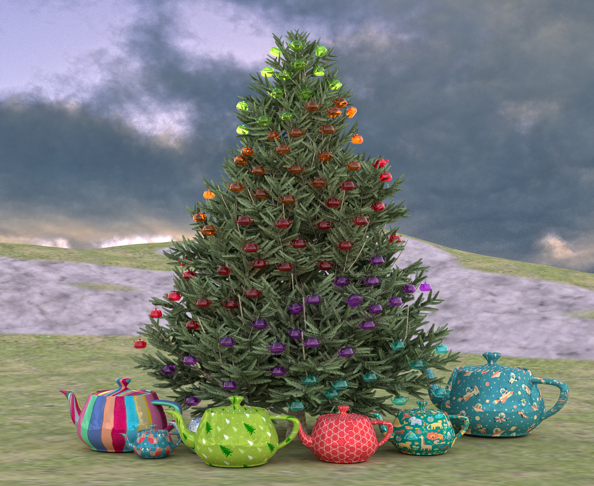
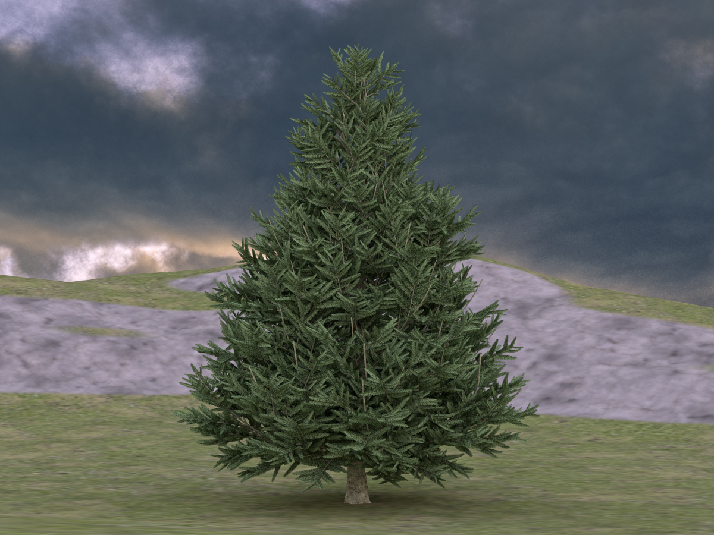

2015 Utah teapot rendering contest
Pile of Teapots
My winning entry. This image is not strictly photorealistic. I rendered out the image into two main layers, one for specular highlights and caustics, and one for diffuse lighting. I also have a mask for just the teapots, and one for the ground. I was able to split up the image and adjust the brightness of each part independently. Here I decided to include some diffuse reflection/refraction for the teapots, but mostly removed the diffuse lighting from the ground. This gave an extra glow to the teapots and also emphasized the caustics. 100,000 samples per pixel.

This image is the specular highlights and caustics layer only.
This is the diffuse lighting layer.
This is the photorealistic version of the image, with both layers having equal intensity.
This is the same scene, but with an environment image as the sole source of light. The lighting is very diffuse as a result. The backdrop and the environment image are the same ones I used in last year's image of the teapots with candies.
Christmas Tree
Over the summer I came up with the idea of having a Christmas tree with hundreds of teapot ornaments and thousands of Christmas lights. Unfortunately I wasn't able to create the lights to my satisfaction so I decided to use natural lighting, which gave a nice photoreastic quality. 16,000 spp.
Creating the tree and rendering it correctly was very time consuming. The tree has images for the pine needles, which have semi-transparency. I was able to incorporate the transparency into my pathtracing hit routine. Given the alpha value (transparency) of a hit point, I would probabilistically treat the hit as a non-hit and continue on if a random variable was more than the alpha value (where a value of one means no transparency). When averaging over many samples, we end up with alpha compositing. I also added normal mapping to my shaders, and also allowed reflected rays to "go through" the surface of the leaves depending on the specified normal (which most likely doesn't match the geometric normal). Adding these techniques gave a nice realistic feathery look to the pine needles.
Models
Thin-walled teapot (ornaments)
Solid teapot (presents)
index, previous, next, CS6620 - Ray Tracing for Graphics